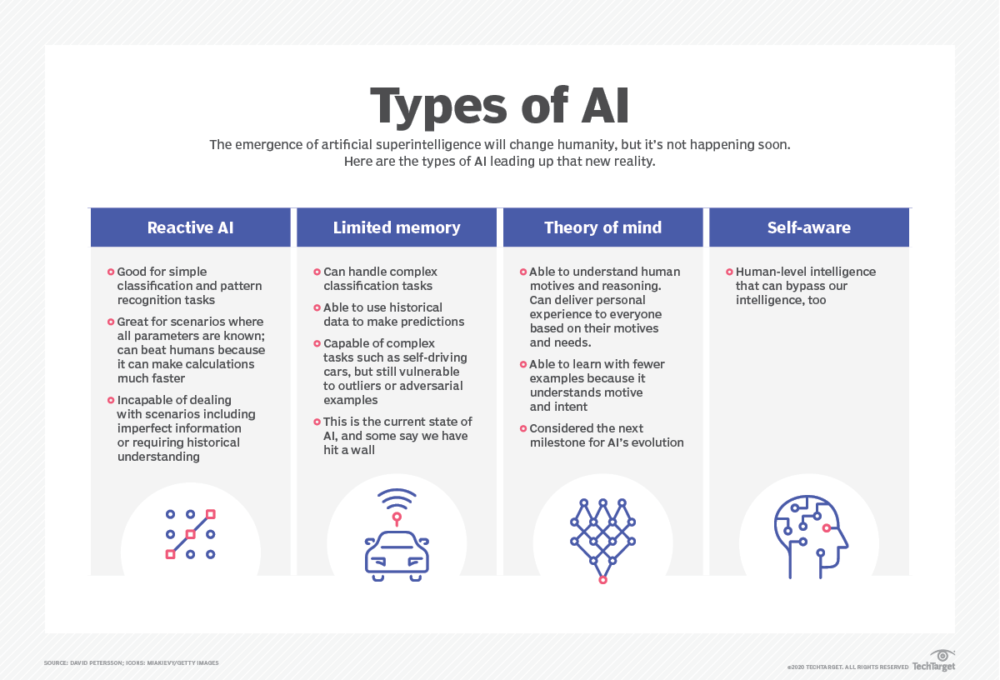
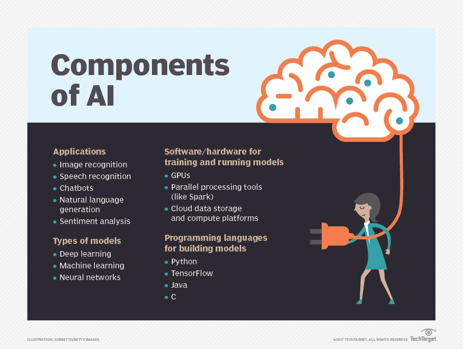

What are the 4 types of artificial intelligence?
Arend Hintze, an assistant professor of integrative biology and computer science and
engineering at
Michigan State University, explained in a 2016 article that AI can be
categorized into four types, beginning with the task-specific intelligent systems in wide use
today
and progressing to sentient systems, which do not yet exist. The categories are as
follows:
Type 1: Reactive machines.
These AI systems have no
memory and are task specific.
An example is
Deep Blue, the IBM chess program that beat Garry Kasparov in the 1990s.
Deep Blue can identify
pieces on the chessboard and make predictions, but because it
has no memory, it cannot use past
experiences to inform future ones.
Type 2: Limited memory.
These AI systems have memory, so
they can use past
experiences to inform
future decisions. Some of the decision-making functions in
self-driving cars are designed this
way.
Type 3: Theory of mind.
Theory of mind is a psychology
term. When applied to AI, it
means that
the system would have the social intelligence to understand emotions.
This type of AI will be able
to infer human intentions and predict behavior, a necessary skill for
AI systems to become integral
members of human teams.
Type 4: Self-awareness.
In this category, AI systems have
a sense of self, which gives
them
consciousness. Machines with self-awareness understand their own current state.
This type of AI does
not yet exist.

What are examples of AI technology
and how is it used today?
AI is incorporated into a variety of different types of technology. Here are six examples:
Automation.
When paired with AI technologies, automation
tools can expand the volume
and types
of tasks performed. An example is robotic process automation (RPA), a type of
software that
automates repetitive, rules-based data processing tasks traditionally done
by humans. When combined
with machine learning and emerging AI tools, RPA can
automate bigger portions of enterprise jobs,
enabling RPA's tactical bots to pass along
intelligence from AI and respond to process
changes.
Machine learning.
This is the science of getting a
computer to act without programming.
Deep
learning is a subset of machine learning that, in very simple terms, can be thought
of as the
automation of predictive analytics. There are three types of machine learning
algorithms:
Supervised learning.
Data sets are labeled so that
patterns can be detected and
used to label
new data sets.
Unsupervised learning.
Data sets aren't labeled and are
sorted according to
similarities or
differences.
Reinforcement learning.
Data sets aren't labeled but,
after performing an action or
several
actions, the AI system is given feedback.
Machine vision.
This technology gives a machine the
ability to see. Machine vision
captures and
analyzes visual information using a camera, analog-to-digital conversion
and digital signal
processing.
It is often compared to human eyesight, but machine vision
isn't bound by biology and can be
programmed
to see through walls, for example. It is
used in a range of applications from signature
identification
to medical image analysis.
Computer vision, which is focused on machine-based image processing, is
often
conflated with machine vision.
Natural language processing (NLP).
This is the processing
of human language by a
computer
program. One
of the older and best-known examples of NLP is spam detection,
which looks at the subject line and
text
of an email and decides if it's junk. Current
approaches to NLP are based on machine learning. NLP
tasks
include text translation,
sentiment analysis and speech recognition.

Robotics.
This field of engineering focuses on the design
and manufacturing of robots.
Robots
are often
used to perform
tasks that are difficult for humans to perform or perform consistently. For example,
robots are used in assembly lines for car production or by
NASA to move large objects in space.
Researchers are also using machine learning to
build robots that can interact in social
settings.
Self-driving cars.
Autonomous vehicles use a combination
of computer vision, image
recognition
and deep
learning to build automated skill at piloting a vehicle while staying in
a given lane and avoiding
unexpected obstructions, such as pedestrians.